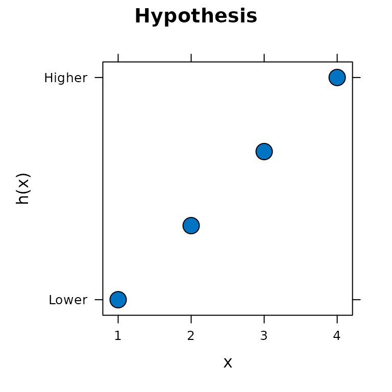
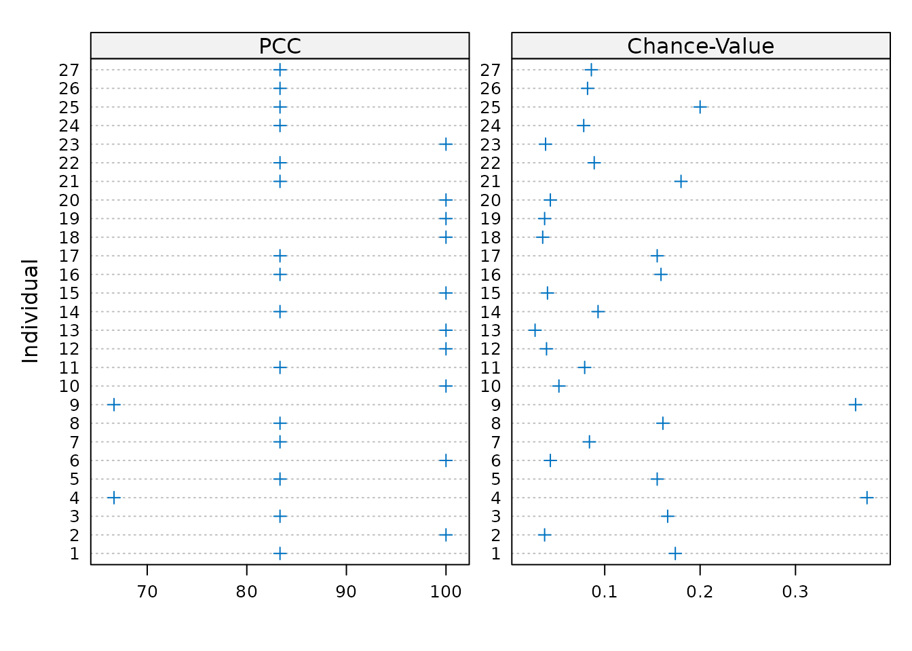
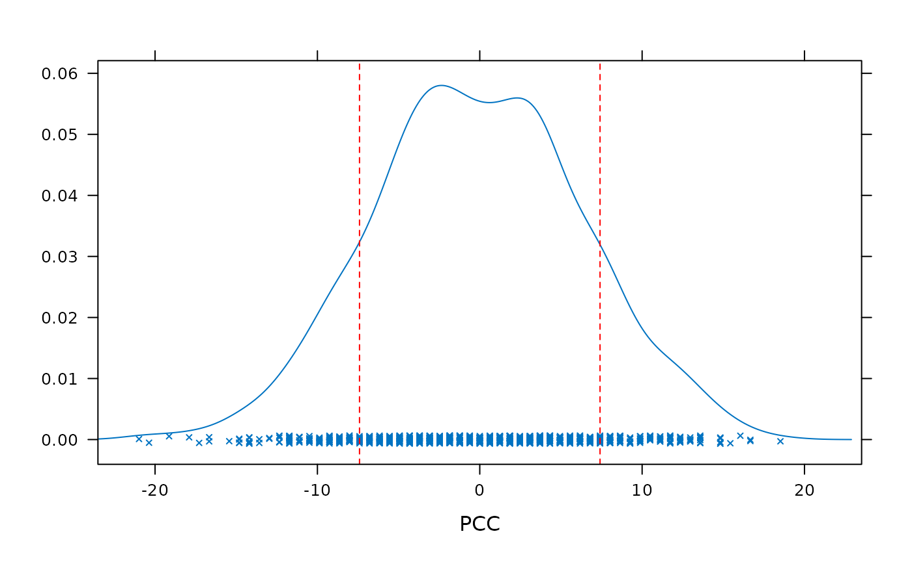

Background
opa is an implementation of methods described in
publications including Thorngate
(1987) and Grice
et al. (2015). Thorngate (1987) attributes the original idea to:
Parsons, D. (1975). The directory of tunes and musical themes. S. Brown.
Ordinal pattern analysis may be useful as an alternative, or addition, to other methods of analyzing repeated measures data such as repeated measures ANOVA and mixed-effects models.
Modeling repeated measures data
Once installed, you can load opa with
Data
For this example we will use childhood growth data reported by
Potthoff & Roy (1964) consisting of measures of the distance between
the pituitary and the pteryo-maxillary fissure. Distances were recorded
in millimeters when each child was 8, 10, 12 and 14 years old. This is
same data set available as Orthodont from the
nlme package.
str(pituitary)
#> 'data.frame': 108 obs. of 4 variables:
#> $ distance : num 26 25 29 31 21.5 22.5 23 26.5 23 22.5 ...
#> $ age : int 8 10 12 14 8 10 12 14 8 10 ...
#> $ individual: Factor w/ 27 levels "1","2","3","4",..: 1 1 1 1 2 2 2 2 3 3 ...
#> $ sex : Factor w/ 2 levels "F","M": 2 2 2 2 2 2 2 2 2 2 ...
xyplot(distance ~ age | individual, pituitary, type = c("g", "p", "l"),
groups = sex, cex = 1.2, pch = 21,
fill = c("#EFC00070", "#0073C270"),
col = c("#EFC000", "#0073C2"),
scales = list(x = list(at = c(8, 10, 12, 14))),
xlab = "Age (years)",
ylab = "Distance (mm)",
main = "Pituitary-Pterygomaxillary Fissure Distance",
key = list(space = "bottom", columns = 2,
text = list(c("Female", "Male")),
lines = list(col = c("#EFC000", "#0073C2")),
points = list(pch = 21, fill = c("#EFC00070", "#0073C270"),
col = c("#EFC000", "#0073C2"))))Wide format
opa requires data in wide format, with one row per
individual and one column per measurement time or condition.
dat_wide <- reshape(data = pituitary,
direction = "wide",
idvar = c("individual", "sex"),
timevar = "age",
v.names = "distance")
head(dat_wide)
#> individual sex distance.8 distance.10 distance.12 distance.14
#> 1 1 M 26.0 25.0 29.0 31.0
#> 5 2 M 21.5 22.5 23.0 26.5
#> 9 3 M 23.0 22.5 24.0 27.5
#> 13 4 M 25.5 27.5 26.5 27.0
#> 17 5 M 20.0 23.5 22.5 26.0
#> 21 6 M 24.5 25.5 27.0 28.5Specifying a hypothesis
For this analysis we will assume a hypothesis of monotonic increase
in distance with increasing age. This monotonic increase hypothesis can
be encoded using the hypothesis() function.
h1 <- hypothesis(c(1, 2, 3, 4), type = "pairwise")Printing the hypothesis object shows that it consists of
sub-hypotheses about six ordinal relations. In this case it is
hypothesized that each of the six ordinal relations are increases, coded
as 1.
print(h1)
#> ********** Ordinal Hypothesis **********
#> Hypothesis type: pairwise
#> Raw hypothesis:
#> 1 2 3 4
#> Ordinal relations:
#> 1 1 1 1 1 1
#> N conditions: 4
#> N hypothesised ordinal relations: 6
#> N hypothesised increases: 6
#> N hypothesised decreases: 0
#> N hypothesised equalities: 0The hypothesis can also be visualized with the plot()
function.
plot(h1)
Fitting an ordinal pattern analysis model
How well a hypothesis accounts for observed data can be quantified at
the individual and group levels using the opa() function.
The first required argument to opa() is a dataframe
consisting of only the response variable columns. The second required
argument is the hypothesis.
m1 <- opa(dat_wide[,3:6], h1)The results can be summarized using the summary()
function.
summary(m1)
#> Ordinal Pattern Analysis of 4 observations for 27 individuals in 1 group
#>
#> Between subjects results:
#> PCC cval
#> pooled 88.27 <0.001
#>
#> Within subjects results:
#> PCC cval
#> 1 83.33 0.15
#> 2 100.00 0.04
#> 3 83.33 0.17
#> 4 66.67 0.40
#> 5 83.33 0.18
#> 6 100.00 0.04
#> 7 83.33 0.08
#> 8 83.33 0.14
#> 9 66.67 0.39
#> 10 100.00 0.04
#> 11 83.33 0.07
#> 12 100.00 0.04
#> 13 100.00 0.04
#> 14 83.33 0.09
#> 15 100.00 0.05
#> 16 83.33 0.19
#> 17 83.33 0.16
#> 18 100.00 0.04
#> 19 100.00 0.04
#> 20 100.00 0.04
#> 21 83.33 0.16
#> 22 83.33 0.09
#> 23 100.00 0.04
#> 24 83.33 0.08
#> 25 83.33 0.17
#> 26 83.33 0.07
#> 27 83.33 0.08
#>
#> PCCs were calculated for pairwise ordinal relationships using a difference threshold of 0.
#> Chance-values were calculated from 1000 random orderings.The individual-level results can also be visualized using
plot().
plot(m1)
It is also possible to determine how well the hypothesis accounts for
the data at the group level for each of the sub-hypotheses using the
compare_conditions() function.
compare_conditions(m1)
#> Pairwise PCCs:
#> 1 2 3 4
#> 1 - - - -
#> 2 66.667 - - -
#> 3 100 77.778 - -
#> 4 100 96.296 88.889 -
#>
#> Pairwise chance values:
#> 1 2 3 4
#> 1 - - - -
#> 2 0.013 - - -
#> 3 <0.001 <0.001 - -
#> 4 <0.001 <0.001 <0.001 -These results indicate that the hypothesis accounts least well for the relationship between the first two measurement times.
Comparing hypotheses
The output of compare_conditions() indicates that it may
be informative to consider a second hypothesis:
h2 <- hypothesis(c(2, 1, 3, 4))
print(h2)
#> ********** Ordinal Hypothesis **********
#> Hypothesis type: pairwise
#> Raw hypothesis:
#> 2 1 3 4
#> Ordinal relations:
#> -1 1 1 1 1 1
#> N conditions: 4
#> N hypothesised ordinal relations: 6
#> N hypothesised increases: 5
#> N hypothesised decreases: 1
#> N hypothesised equalities: 0To assess the adequacy of h2 we fit a second
opa() model, this time passing h2 as the
second argument.
m2 <- opa(dat_wide[,3:6], h2)The compare_hypotheses() function can then be used to
compare how well two hypothese account for the observed data.
(comp_h1_h2 <- compare_hypotheses(m1, m2))
#> ********* Hypothesis Comparison **********
#> H1: 1 2 3 4
#> H2: 2 1 3 4
#> H1 PCC: 88.2716
#> H2 PCC: 80.8642
#> PCC difference: 7.407407
#> cval: 0.251
#> Comparison type: two-tailedThese results indicate that the monotonic increase hypothesis encoded
by h1 better acounts for the data than h2.
However, the difference between these hypotheses is not large. The
computed chance value indicates that a difference at least as large
could be produced by chance, through random permutations of the data,
about one quarter of the time. The calculation of the group-level
chance-value can be visualized by plotting the object returned by
compare_hypotheses().
plot(comp_h1_h2)
Comparing groups
So far the analyses have not considered any possible differences
between males and females in terms of how well the hypotheses account
for the data. It is possible that a given hypothesis account better for
males than for females, or vice-versa. A model which accounts for groups
within the data can be fitted by passing a factor vector or dataframe
column to the group argument.
m3 <- opa(dat_wide[,3:6], h1, group = dat_wide$sex)The compare_groups() function may then be used to
quantify the difference in hypothesis performance between any two groups
within the data.
(comp_m_f <- compare_groups(m3, "M", "F"))
#> ********* Group Comparison **********
#> Group 1: M
#> Group 2: F
#> Group 1 PCC: 87.5
#> Group 2 PCC: 89.39394
#> PCC difference: 1.893939
#> cval: 0.849
#> Comparison type: two-tailedIn this case, compare_groups() indicates that the
difference in how well the hypothesis accounts for males and females
growth is very small. the chance value shows that a difference at least
as great could be produced by chance around 80% of the time. As with the
hypothesis comparison, the computation of the chance value for the group
comparison can be visualized by plotting the object returned by
compare_groups().
plot(comp_m_f)Difference thresholds
Each of the above models has treated any numerical difference in the
distance data as a true difference. However, we may wish to treat values
that differ by some small amount as equivalent. In this way we may
define a threshold of practical or clinical significance. For example,
we may decide to consider only differences of at least 1 mm. This can be
achieved by passing a threshold value of 1 using the
diff_threshold argument.
m4 <- opa(dat_wide[,3:6], h1, group = dat_wide$sex, diff_threshold = 1)Setting the difference threshold to 1 mm results in a greater difference in hypothesis performance between males and females.
group_results(m4)
#> PCC cval
#> F 54.55 <0.001
#> M 71.88 <0.001However, compare_groups() reveals that even this larger
difference could occur quite frequently by chance.
compare_groups(m4, "M", "F")
#> ********* Group Comparison **********
#> Group 1: M
#> Group 2: F
#> Group 1 PCC: 71.875
#> Group 2 PCC: 54.54545
#> PCC difference: 17.32955
#> cval: 0.164
#> Comparison type: two-tailedReferences
Grice, J. W., Craig, D. P. A., & Abramson, C. I. (2015). A Simple and Transparent Alternative to Repeated Measures ANOVA. SAGE Open, 5(3), 215824401560419. https://doi.org/10.1177/2158244015604192
Parsons, D. (1975). The directory of tunes and musical themes. S. Brown.
Potthoff, R. F., & Roy, S. N. (1964). A Generalized Multivariate Analysis of Variance Model Useful Especially for Growth Curve Problems. Biometrika, 51(3/4), 313–326. https://doi.org/10.2307/2334137
Thorngate, W. (1987). Ordinal Pattern Analysis: A Method for Assessing Theory-Data Fit. Advances in Psychology, 40, 345–364. https://doi.org/10.1016/S0166-4115(08)60083-7